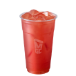
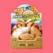
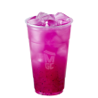
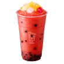
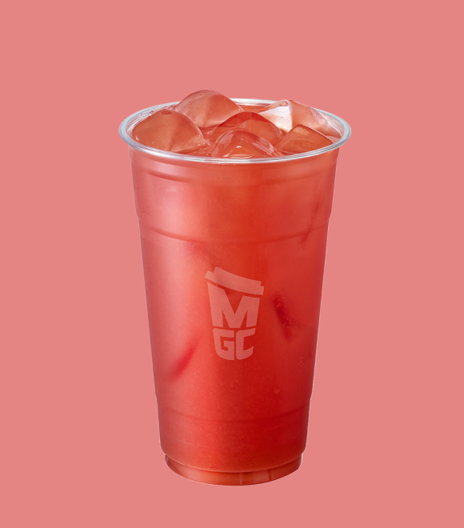
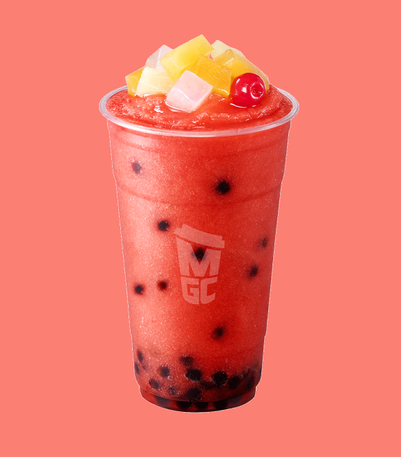

-  수박 주스
-  첨벙첨벙 간식꾸러미
-  트로피컬 용과 티플레저
-
 코코넛 커피 스무디
코코넛 커피 스무디
-  수박 화채 스무디
- 


- 
-
Travel The Summer
수박 주스
돌아온 여름시즌 베스트셀러! 달달하고 시원한 메가MGC커피 만의 수박주스. 메가MGC와 함께 떠나는 시원한 동남아 여행! 싱그러운 여름, 메가MGC커피와 함께 동남아로 떠나 볼까요? 여행의 시작은 시원한 웰컴-드링크 한 잔! 지금 메가MGC커피에서 만나보세요.
-
Travel The Summer
첨벙첨벙
간식꾸러미핫도그 보물섬을 찾아서 생크림 오믈렛 파도를 헤엄치는 커스타드맛 상어로 구성 된 여름 간식 꾸러미 메가MGC와 함께 떠나는 시원한 동남아 여행! 싱그러운 여름, 메가MGC커피와 함께 동남아로 떠나 볼까요? 여행의 시작은 시원한 웰컴-드링크 한 잔! 지금 메가MGC커피에서 만나보세요.
-
Travel The Summer
트로피컬 용과
티플레저상큼 달콤한 트로피컬 과일, 강렬한 레드 용과와 아삭한 알로에겔이 들어간 그린티 베이스의 티플레저 메가MGC와 함께 떠나는 시원한 동남아 여행! 싱그러운 여름, 메가MGC커피와 함께 동남아로 떠나 볼까요? 여행의 시작은 시원한 웰컴-드링크 한 잔! 지금 메가MGC커피에서 만나보세요.
-
Travel The Summer
코코넛
커피 스무디바삭하고 고소한 코코넛 칩을 올리고 쌉싸름한 커피와 달콤한 코코넛이 조화로운 스무디 메가MGC와 함께 떠나는 시원한 동남아 여행! 싱그러운 여름, 메가MGC커피와 함께 동남아로 떠나 볼까요? 여행의 시작은 시원한 웰컴-드링크 한 잔! 지금 메가MGC커피에서 만나보세요.
-
Travel The Summer
수박 화채 스무디
달달하고 청량한 수박 스무디 위로 다채로운 과일을 올려낸 수박 화채 스무디 메가MGC와 함께 떠나는 시원한 동남아 여행! 싱그러운 여름, 메가MGC커피와 함께 동남아로 떠나 볼까요? 여행의 시작은 시원한 웰컴-드링크 한 잔! 지금 메가MGC커피에서 만나보세요.